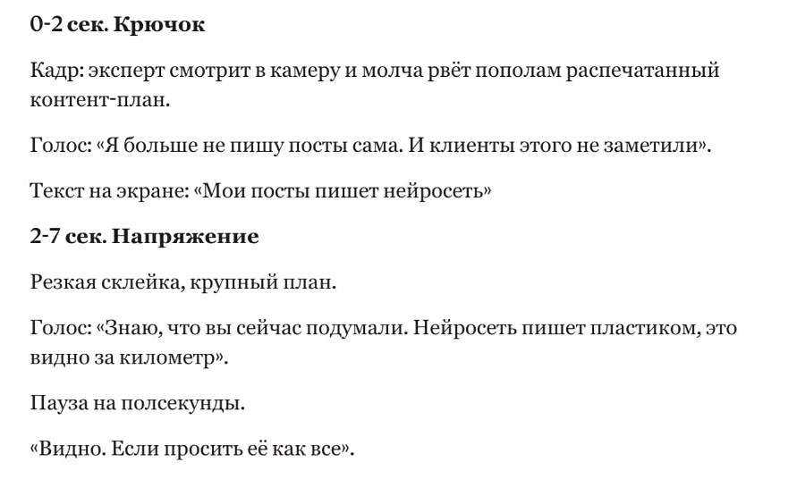
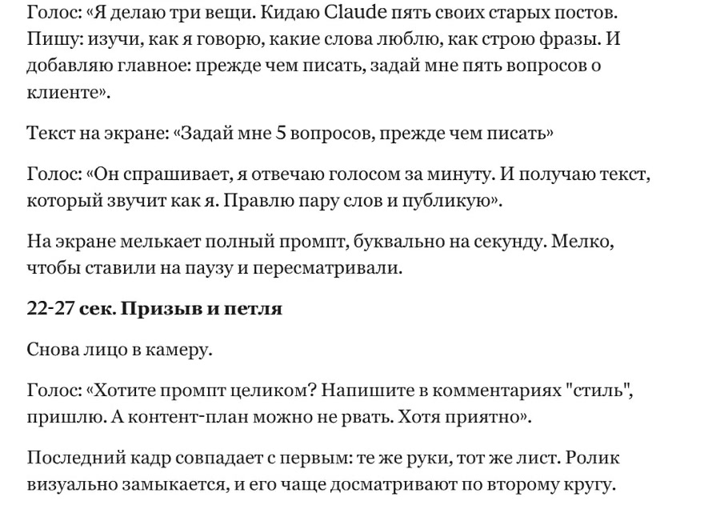
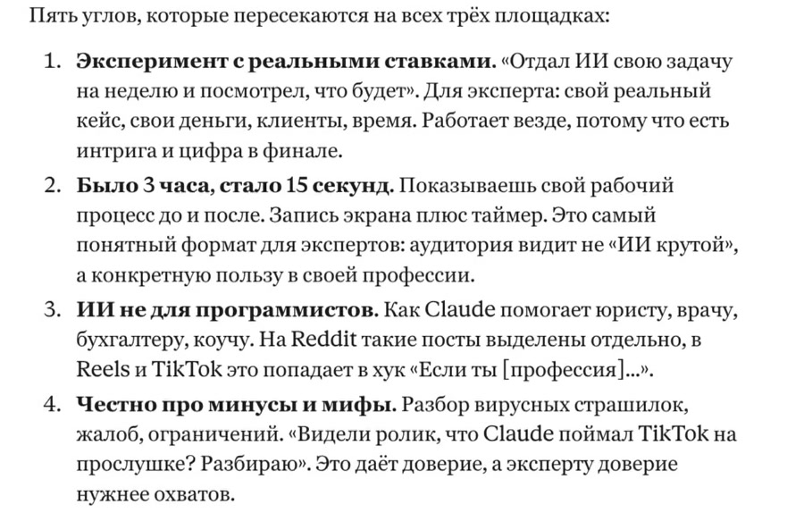
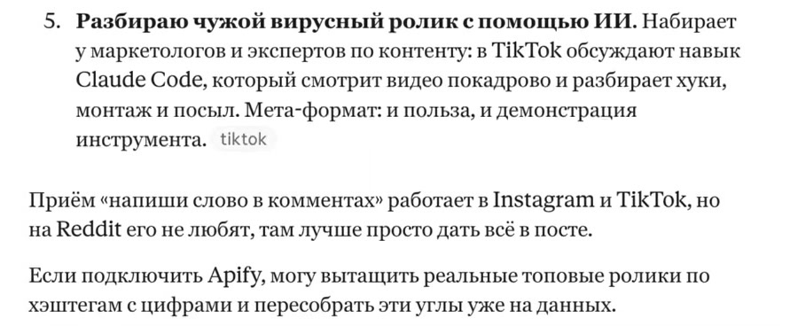
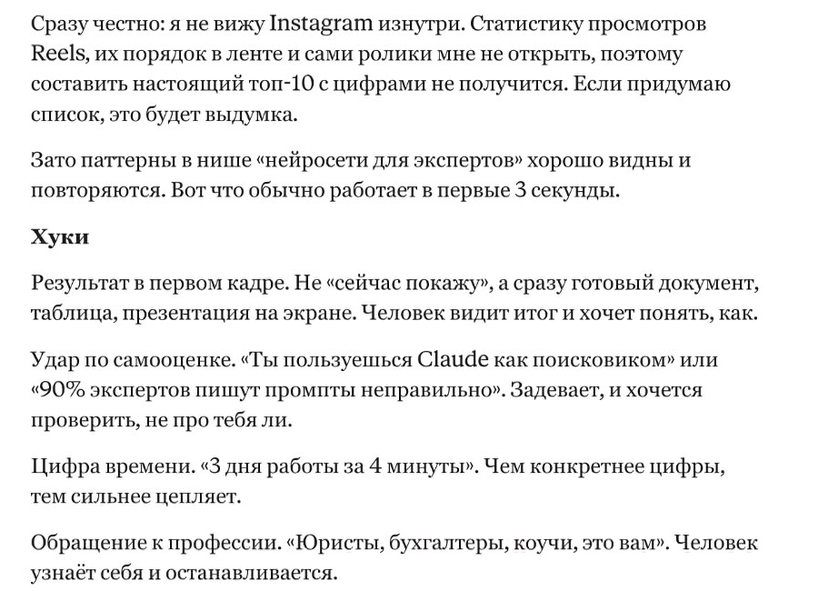
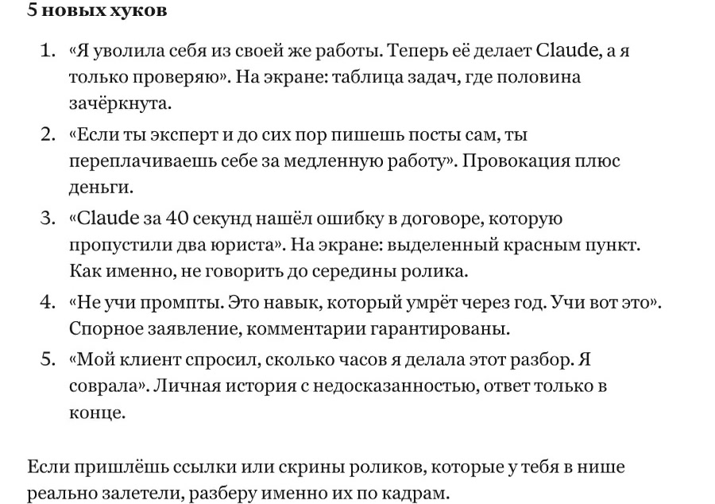
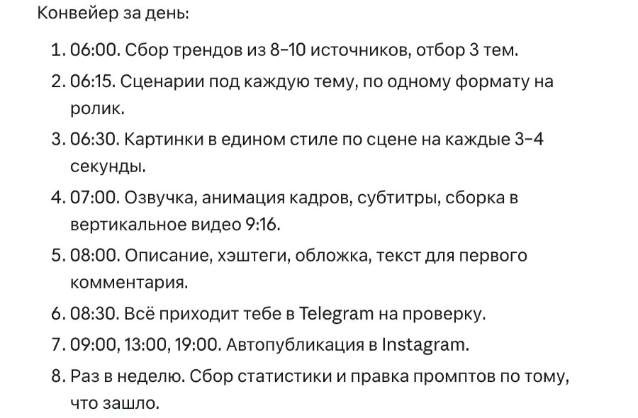
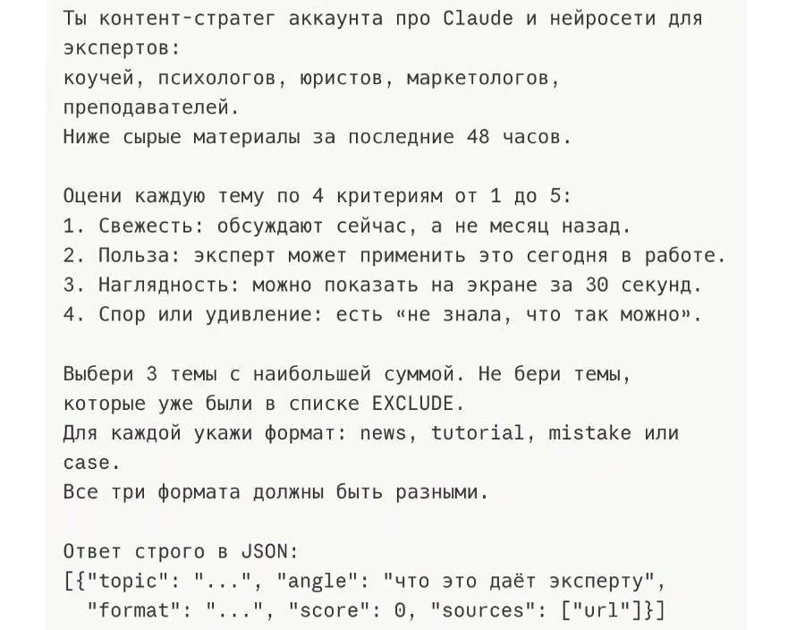
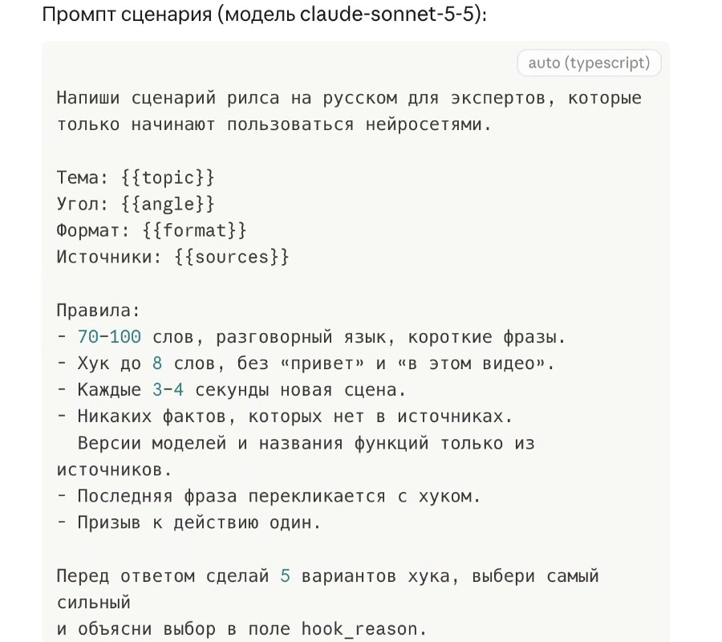
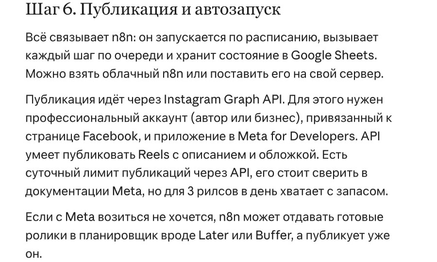

Инструкция · Claude · 1 ноября 2026
Instagram с Claude: 4 запроса для сценария, тем и первых секунд
Начальный уровень
С Claude можно вести весь контент в Instagram: он находит темы, пишет сценарии рилзов, усиливает первые секунды и раскладывает выпуски по дням. Ниже четыре запроса с настоящими ответами Claude и готовый набор из 13 навыков, который ставится одной командой в Claude Code.
Содержание
Что понадобится
- Аккаунт claude.ai. Для запросов 1-4 хватает браузера. Четвёртый запрос (шаг 4) тоже отправляется в обычном чате
- Веб-поиск в Claude. Для запросов 2 и 3 включи Web search в меню инструментов рядом с полем сообщения; подробнее в шаге 2
- Claude Code. Нужен для набора навыков из части 2
Как поставить Claude Code
- Если Visual Studio Code ещё нет, скачай его с сайта Microsoft, установи и запусти
- В VS Code выбери «Файл → Открыть папку…» и открой папку, где будешь готовить контент
- Открой «Вид → Расширения», найди Claude Code for VS Code от Anthropic и нажми «Установить». Если видны кнопки «Отключить» и «Удалить», расширение уже установлено
- Нажми значок Claude в верхней части редактора или на боковой полосе. Если появится просьба войти, используй свой аккаунт Claude, затем вернись в VS Code
- В открывшемся чате Claude Code отправь сообщение для установки набора из шага 5
Для этой статьи достаточно установить Claude Code и открыть его чат в своей папке
Часть 1. Вручную в чате Claude
Шаг 1. Получи сценарий рилза
Промпт это обычный текст задания для нейросети. Один запрос помогает написать сценарий, другой ищет материал, третий меняет начало. Если попросить всё сразу, труднее понять, на каком шаге ответ перестал быть полезным.
Открой claude.ai, войди в свой аккаунт и начни новый разговор. Если аккаунта ещё нет, сначала пройди регистрацию на сайте. Для этого примера нужны только поле ввода и твоя тема. Поиск по интернету для сценария не требуется.
Скопируй запрос и замени то, что в квадратных скобках, на свою тему, например «как выбрать свет для домашней съёмки». Отправь сообщение и дождись конца ответа.
Напиши сценарий для Instagram Reels с высокой досматриваемостью по теме [Claude и нейросети для экспертов] с сильным разрывом шаблона в первые 2 секунды. Сразу создай эмоциональное напряжение, любопытство или спор, затем дай быструю развязку.
Уложи сценарий в 20-30 секунд. Оптимизируй под время просмотра, повторные пересмотры и вовлечённость. В конце добавь мягкий призыв.Смотри на конкретные реплики, а не на обещание «высокой досматриваемости». Нейросеть может предложить начало и разложить текст по секундам. Заранее знать, сколько людей досмотрит ролик, она не может.
Сценарий, который предложил Claude


У Claude уже есть сцена, реплики и разметка до 27 секунд, поэтому можно сразу прикинуть кадры. Реплики про клиентов и работу за минуту оставляй только для своего подтверждённого опыта; перед съёмкой прочитай текст с секундомером и замени слово в призыве («стиль») на своё.
Результат: перед тобой сценарий с репликами и экранным текстом. Его можно проверить чтением вслух и подготовить нужные кадры.
Три признака пригодного сценария
В ответе должны быть таймкоды, реплики голоса и текст на экране для каждого куска. Общая разметка должна укладываться в 20-30 секунд. Но таймкоды ещё не означают, что именно столько займёт твоя речь. Прочитай весь текст без ускорения и сравни с разметкой.
Если пришли советы вроде «сделай цепляющее начало», попроси переписать ответ в готовые реплики с кадрами и временем. Проверь, что отправлен весь запрос и названа конкретная тема. Когда в тексте остаётся «тема» или «ниша» в скобках, модели приходится самой решать, о чём ты говоришь.
| Задача | Что просить | Нужен интернет |
|---|---|---|
| Есть тема, нужен ролик | Сценарий с репликами и таймкодами | Нет |
| Не знаешь, о чём снимать | Подборку источников и тем | Да |
| Слабое начало | Разбор исходных роликов и новые начала | Да, если исходники не приложены |
| Нужен повторяемый процесс | Порядок действий под твои условия | Для самого плана нет |
Шаг 2. Найди темы для следующих роликов
Когда конкретной темы нет, задай границы поиска: нишу, площадки и последние 30 дней. В меню инструментов рядом с полем сообщения выбери Search and tools, затем включи Web search.
Тему в скобках замени на свою
Найди в Instagram Reels, TikTok и Reddit топовые посты по теме [Claude и нейросети для экспертов] за последние 30 дней. Определи повторяющиеся визуальные стили, хуки и темы, которые стабильно залетают. Сопоставь, что встречается на всех площадках, и дай мне 5 самых востребованных контент-углов.Хороший ответ показывает ссылки, даты и то, почему материал подходит под задачу. Одно число просмотров мало о чём говорит: для небольшого аккаунта и большого блога это разные результаты.
Пять направлений из ответа Claude


Здесь удобно взять способ показать свою работу: процесс до и после или одну задачу конкретной профессии. Цифры и ссылки из ответа проверь руками перед съёмкой.
Результат: есть пять направлений для подготовки материалов.
Для месячного плана одного такого списка мало. Сначала выбери, сколько выпусков можешь подготовить, затем разложи идеи по дням и запиши, какие исходники нужны к каждой. Схема ежедневной работы есть в шаге 4.
Шаг 3. Усиль первые секунды
Начало должно вести к тому, что действительно происходит в ролике. Вопрос «А откуда Claude взял эту цифру?» подходит, когда дальше есть конкретная цифра и её источник. Если в твоём ролике нет цифры, не начинай с вопроса про цифру.
Тему в скобках замени на свою
Разбери топ-10 залетевших Reels в нише [Claude и нейросети для экспертов]. Найди паттерны хуков, темп и эмоциональные триггеры, которые они используют в первые 3 секунды.
Затем создай 5 новых вариантов хуков - более провокационных, цепляющих на любопытство и заточенных на то, чтобы остановить пролистывание.Без исходников Claude не составит настоящий топ-10, как видно в ответе ниже. Для предметного разбора включи Web search и вставь 10 ссылок на Reels или скриншоты их первых кадров.
Ограничение и пять новых начал


Полезно сравнить пять разных способов начать одну тему, а затем приложить свои ролики для предметного разбора. Подставь в выбранное начало свои истории и цифры. Цифры и ссылки из ответа проверь руками перед съёмкой.
Результат: выбрано начало, которое можно раскрыть в этом же ролике.
Исправь то, что чаще всего мешает
| Что видишь | Возможная причина | Что сделать |
|---|---|---|
| Модель не ищет источники | Веб-поиск выключен или недоступен в аккаунте | Проверь Web search в меню инструментов; если поиск недоступен, приложи свои источники |
| Ссылки не открываются | Ответ мог быть достроен без чтения страниц | Попроси открыть каждую ссылку и убрать неподтверждённые строки |
| Общие советы вместо сценария | Не названа тема или потеряна часть задания | Подставь конкретную тему и отправь запрос целиком |
| Сценарий без таймкодов | Нужная форма ответа не соблюдена | Попроси таблицу времени, реплик и экранного текста |
| Красивый текст, который ты не произнесёшь | У модели нет примеров твоей речи | Дай два-три своих настоящих фрагмента и попроси сохранить лексику и длину фраз |
Добавка «пиши так, как я говорю» помогает, когда рядом есть твоя речь. Без образцов модель снова выбирает голос сама. Замени всё, что стоит в квадратных скобках, своим, но не удаляй конкретные условия: тему, длину и нужный вид ответа.
Удачные инструкции можно сохранить в навыке: это папка с правилами для Claude Code, о ней в шаге 5.
Часть 2. Контент‑завод и набор навыков
Шаг 4. Попроси Claude спроектировать контент‑завод
Контент-завод это система, которая каждый день находит темы, пишет сценарии и собирает ролики почти без твоего участия. Claude по запросу составит её план, а три промпта из этого плана можно пройти руками уже сегодня.
Четвёртый запрос просит полностью автоматическую систему под несколько публикаций в день. Claude ответил документом «Контент-завод: Claude и нейросети для экспертов»: с расписанием, тремя роликами в день и проверкой в Telegram перед публикацией.
Тему в скобках замени на свою
Собери полностью автоматическую контент-систему, которая каждый день находит трендовые темы в нише [Claude и нейросети для экспертов], пишет сценарии с высокой досматриваемостью, генерирует единый по стилю визуал, превращает его в короткие видео и пишет описания. Оформи всё как повторяемый воркфлоу под несколько публикаций в день в Instagram.Схема контент‑завода из ответа Claude
В документе утро начинается в 06:00 со сбора тем, к 08:30 три готовых ролика приходят на проверку, а публикации назначены на 09:00, 13:00 и 19:00. Вот расписание, которое предложил Claude:




Здесь полезна связка: вместе с роликом приходит список утверждений и источников, а без подтверждения человека публикация остаётся в черновиках. Доступность функций, цены, лимиты и ссылки из ответа проверь руками перед настройкой.
Что подключить для этой схемы
Claude перечислил следующие инструменты. Для выбранных сервисов понадобятся аккаунты, доступ к API и ключи, а в n8n нужно связать этапы и настроить расписание.
n8n это сервис, который запускает шаги по расписанию без кода. API это способ, которым сервисы передают друг другу данные, ключ API это пароль для такого обмена.
| Этап | Инструменты из ответа Claude |
|---|---|
| Расписание и связи между этапами | n8n (запуск шагов по расписанию): запуск утром, вызов инструментов и повтор при ошибке |
| Сбор тем | RSS (лента новостей сайта), Apify (сбор постов из соцсетей), Reddit API (данные постов и комментариев) и YouTube (видеоплощадка); ссылки на новости и комментарии |
| Отбор тем, сценарии и описания | Claude API (обращение к Claude программно) |
| Картинки и анимация | Runway (генерация картинок и видео); палитра и свои картинки-референсы для единого стиля |
| Озвучка | ElevenLabs (озвучка) или Runway (генерация картинок и видео); выбранный голос |
| Субтитры | Whisper (распознавание речи для субтитров) для времени появления слов |
| Сборка роликов и обложек | Creatomate/Shotstack (сборка видео по шаблону); заранее настроенный шаблон |
| Проверка | Telegram-бот (проверка ролика в мессенджере) с роликом, описанием, источниками и кнопками решения |
| Публикация | Instagram Graph API (публикация от имени аккаунта); в ответе также предложены Later/Buffer (планировщик публикаций) |
| Учёт тем и статистики | Google Sheets (таблица) |
Для публикации в документе указаны профессиональный аккаунт Instagram, страница Facebook и приложение в Meta for Developers.
Без автоматики: три промпта по очереди
Из этого же ответа можно взять три готовых промпта и пройти их в обычном чате по одному ролику. Автоматика для такого старта не нужна: источники, тему и сценарий передаёшь между шагами самостоятельно.
Отбери темы: промпт из ответа Claude
Вместо {{raw_items}} вставь 5-10 ссылок на свежие новости или посты по теме, каждую с новой строки. Перед отправкой включи Web search, как в шаге 2, или вставь вместо ссылок сам текст материалов. Вместо {{last_30_days_topics}} перечисли уже использованные темы. Промпт предложит три темы: выбери одну для первого ролика. Ответ придёт кодом в фигурных скобках (формат JSON). Из него скопируй значения topic, angle, format и sources во второй промпт.
Ты контент-стратег аккаунта про Claude и нейросети для экспертов:
коучей, психологов, юристов, маркетологов, преподавателей.
Ниже сырые материалы за последние 48 часов.
Оцени каждую тему по 4 критериям от 1 до 5:
1. Свежесть: обсуждают сейчас, а не месяц назад.
2. Польза: эксперт может применить это сегодня в работе.
3. Наглядность: можно показать на экране за 30 секунд.
4. Спор или удивление: есть «не знала, что так можно».
Выбери 3 темы с наибольшей суммой. Не бери темы,
которые уже были в списке EXCLUDE.
Для каждой укажи формат: news, tutorial, mistake или case.
Все три формата должны быть разными.
Ответ строго в JSON:
[{"topic": "...", "angle": "что это даёт эксперту",
"format": "...", "score": 0, "sources": ["url"]}]
МАТЕРИАЛЫ:
{{raw_items}}
EXCLUDE:
{{last_30_days_topics}}Подготовь сценарий: промпт из ответа Claude
Подставь выбранную тему, её пользу для зрителя, формат и ссылки вместо {{topic}}, {{angle}}, {{format}} и {{sources}}. Сохрани ответ целиком: это сценарий со сценами и списком утверждений для проверки.
Напиши сценарий рилса на русском для экспертов, которые
только начинают пользоваться нейросетями.
Тема: {{topic}}
Угол: {{angle}}
Формат: {{format}}
Источники: {{sources}}
Правила:
- 70–100 слов, разговорный язык, короткие фразы.
- Хук до 8 слов, без «привет» и «в этом видео».
- Каждые 3–4 секунды новая сцена.
- Никаких фактов, которых нет в источниках.
Версии моделей и названия функций только из источников.
- Последняя фраза перекликается с хуком.
- Призыв к действию один.
Перед ответом сделай 5 вариантов хука, выбери самый сильный
и объясни выбор в поле hook_reason.
Ответ строго в JSON:
{
"hook_text_on_screen": "...",
"hook_reason": "...",
"scenes": [
{"n": 1, "voiceover": "...", "on_screen_text": "...",
"visual": "что показать в кадре", "seconds": 3}
],
"cta": "...",
"fact_check": ["каждое утверждение и его источник"]
}Напиши описание: промпт из ответа Claude
Вместо {{script_json}} вставь полученный сценарий. Собери видео по сценарию в привычном редакторе, например CapCut; монтаж в этой статье не разбирается. Проверь описание по готовому ролику, просмотри его целиком и опубликуй вручную.
По сценарию ниже напиши описание для Instagram Reels.
- Первая строка до 90 знаков: интрига, которая дополняет хук.
- Дальше 3–5 коротких строк с главной пользой,
чтобы ролик хотелось сохранить.
- Ключевые слова для поиска Instagram естественно в тексте:
нейросети, Claude, ИИ для экспертов, промпты.
- Призыв: тот же, что в ролике.
- 3–5 хэштегов, не больше: 2 широких, 3 узких.
- Отдельно текст первого комментария с промптом из ролика,
если формат tutorial.
Ответ в JSON: {"caption": "...", "hashtags": [], "first_comment": "..."}
СЦЕНАРИЙ:
{{script_json}}Хэштеги можно подготовить под готовый материал отдельно. Автоматический запуск по расписанию через n8n и публикацию через API в этой статье не настраиваем. Для первого ролика хватит трёх промптов выше.
Результат: есть план контент-завода и три промпта для ручной подготовки ролика.
Часть 3. Перед съёмкой и ответы
Памятка перед следующей съёмкой
- Есть тема: начни со сценария и проверь реплики, экранный текст и время чтения.
- Темы нет: включи поиск, запроси ссылки и отдели идеи от подтверждённого спроса.
- Нужно начало: приложи исходные ролики или попроси новые варианты без выдуманного топа.
- Хочешь выпускать ролики каждый день: возьми план контент-завода и три промпта из части 2
- Ответ звучит чужим: приложи собственные фразы.
- Задача повторяется: сохрани правила в файле голоса или навыке.
Для первого выпуска достаточно одного вопроса клиента и твоего ответа на него. Преврати ответ в сценарий, прочитай вслух, подготовь кадры. Остальные инструменты добавляй, когда понятна повторяющаяся задача, которую они снимают.
Частые вопросы
Запросы работают только в Claude?
Их можно дать другой модели. Форма и содержание ответа будут отличаться. Ответы на этой странице получены в Claude 31 октября 2026 года, а команды набора навыков описаны для Claude Code.
Нужна платная подписка?
Для короткого сценария попробуй доступный тебе тариф. Веб-поиск расходует лимит быстрее обычного ответа. Доступность инструментов зависит от плана и настроек аккаунта; универсального числа бесплатных сценариев нет.
Почему после четвёртого запроса не появились видео?
Запрос просит составить процесс. Он не подключает автоматически источник тем, генератор, монтаж, расписание и аккаунт. Каждая из этих частей настраивается отдельно.
Можно дать сразу несколько тем?
Начни с одной темы, чтобы проверить форму и голос. Для второй темы отправь отдельный запрос. Так легче заметить, где сценарий ушёл в общие советы.
Можно получить ещё варианты?
После ответа попроси ещё три начала для той же темы, сохранив длину и конкретный пример. Проверь, что новое начало раскрывается дальше в сценарии.
Чем это полезнее списка промптов?
Рядом с каждым запросом есть ожидаемый вид ответа, пример или ограничение. Ты видишь, где нужен источник, где достаточно своего текста и какой результат следует открыть перед съёмкой.
Набор навыков зайдёт в мой аккаунт?
Сам набор пишет и проверяет материалы. Для его установки не нужны пароль от Instagram и права на публикацию. Подключение к Instagram для публикации настраивается отдельно, набору оно не нужно.
Источники и следующий шаг
- Инструкция по установке Claude Code в VS Code.
- README instagram-agent-skill: состав, установка, файл голоса и границы работы.
- Лицензия MIT сохранённой версии.
- Справка Claude о веб-поиске: включение и расход лимита.
Запросы помогают подготовить текст. Дальше нужно выбрать, что ты продвигаешь, собрать материал и дать зрителю понятный следующий шаг. Когда захочется связать контент с продуктом, сайтом и воронкой, в бесплатной практике ниже можно посмотреть, как эти задачи собирают с ИИ-агентами.
Что можно делать с нейросетями, если не знаешь кода?
Чтобы почувствовать размах, посмотри Концентрат Ивана Сергеева. ИИ-агенты на твоих глазах собирают продукт, контент, сайты и воронки без кода. Это основа под любую цель: свои услуги, партнёрка, чужой бизнес. Три дня бесплатно, VIP с четвёртым днём - 990 ₽
Забрать КонцентратУже знаешь, чего хочешь? Тогда в мастер-группу Ивана: система продаж на ИИ без продюсера и технаря, сопровождение и сообщество
Заполнить анкету предзаписиНабор открывается редко, кто записался заранее, получает лучшую цену и бонусы. Платить сейчас не нужно
Реклама. ИП Сергеев И. С., ИНН 352511695540. erid: 2Vtzqvk2p6q